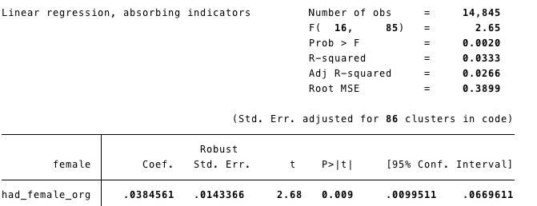
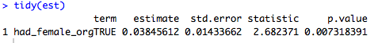
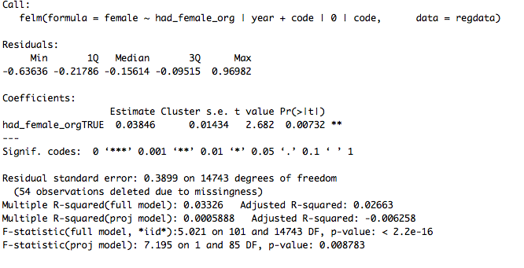
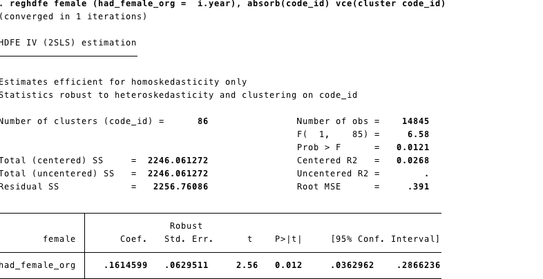
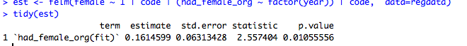
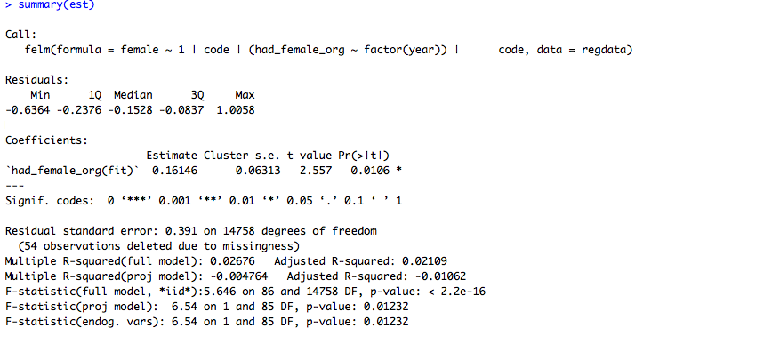
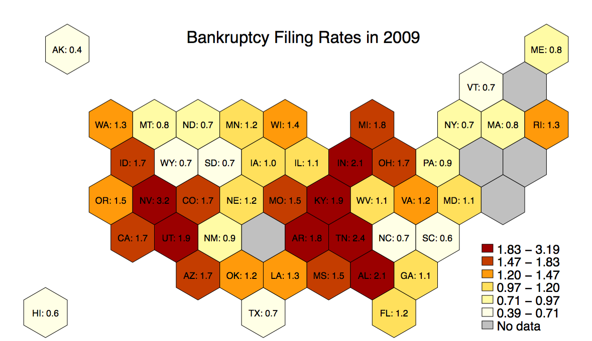

Paul Goldsmith-Pinkham
Research Economist

I am an assistant professor at the Yale School of Managment. If you need to reach me, please email me at paul.goldsmith-pinkham at yale dot edu.
Comparing tidyverse R to Stata
I spent some time this weekend learning tidyverse, a set of R libraries inspired by tidyr by Hadley Wickham. I have a lot of friends who swear by R -- I used it in college quite a bit, but once I switched to Stata I never went back. The main reason for this was that the base R language (which is how I learned R) is quite clunky -- it's painful to do basic data cleaning. However, I recently read through a nice post by David Robinson on the values of tidyverse and I decided to give a shot.
The results were amazing, and I'll try to show why I think the code is so great in tidyr. I also wanted to compare the regression output from Stata and R to make sure that switching over my analysis to R wouldn't screw with my estimates, standard errors, etc. Josh Angrist once told a class I was in that you can play around with creating your own estimators all you want, but in the end you should run it through Stata since they'll get all the standard errors right (specifically in the context of 2SLS).
Let me start by showing a basic data cleaning exercise in Stata, and then in R.
Stata *** Load Data + create variables
use data_master, clear
keep if role == "author"
gen had_female_org = organizer_female > 0 if ~missing(organizer_female)
gen female = gender == "Female" if ~missing(female)
keep had_female_org female code year
*** Basic Summary Stats by groups
mean female
tab year, sum(female)
tab code, sum(female)
*** Simple Panel Regression
areg female had_female_org i.year, absorb(code) cluster(code)
R
library(dplyr)
library(tidyr)
library(broom)
library(lfe)
##Load Data + create variables
masterdata <- read_csv("data_master.csv")
regdata <- masterdata %>% filter(role == "author") %>%
mutate(had_female_org = organizer_female > 0,
female = gender == "Female") %>%
select(had_female_org, female, code, year)
##Basic Summary Stats
regdata %>% summarize(mean(female))
regdata %>% group_by(year) %>% summarize(mean(female))
regdata %>% group_by(code) %>% summarize(mean(female))
est <- felm(female ~ had_female_org | year + code | 0 | code, data=regdata)
tidy(est)
summary(est)
This is a pretty trivial example, and I didn't do a lot of data cleaning in it. (My other example uses basketball data that was in need of a lot of data cleaning, and was even cleaner. I chose this example because I didn't want to scare off any non-basketball economists.) However, I find the notation a lot easier to read, and a lot more concise.
Moreover, and this is big: R is creating different matrices / vectors to store the data when it creates output. As a result, as you create different files, you can reappend or merge them to other files. In Stata, the amount of hacks you need to put in place to extract coefficients and pull them in and out of memory is a nightmare. I only do it because I have no choice.
What about output? Well, after making some dumb mistakes in Stata (e.g. that organizer_female > 0 will evaluate as True if organizer_female is missing, a notorious Stata "feature"), I get exactly the same output. Here it is in Stata: 
and in R (first simplified, then the full output):  Two things worth noting:
- The coefficients are exactly the same, as are the standard errors! Phew.
- The F-statistics are slightly different, but it turns out that's because I didn't "absorb" the year effects in the Stata code. If you put the year effects into the model in R, the F-statistics are identical.
egen code_id = group(code)
reghdfe female (had_female_org = i.year), absorb(code_id) vce(cluster code_id)
est <- felm(female ~ 1 | code | (had_female_org ~ factor(year)) | code, data=regdata)
tidy(est)
summary(est)
The results here are promising, but I wish they were as exact as the non-IV results. Here's Stata: 
and in R (first simplified, then the full output):):   The coefficients are exactly identical. However, the standard errors and p-values are not perfectly lined up. I've also rerun this using ivreg2 (and excluding the code fixed effects) and there is a similar difference in the standard errors. The differences are tiny, but it's worth knowing in the back of your head. I'm still 100% confident to use this in my work, but it's notable that there are differences (and worth keeping in mind if you are ever trying to replicate results!).Stata Maps
I recently put together a maptile geography to incorporate the NPR hex tile map for state maps to be used in Michael Stepner's excellent Stata maptile ado program (which is a wrapper for spmap). It should be up soon on Michael's website, but you can grab it here for now.
These maps can be useful for two reasons: first, they prevent readers from overweighting unpopulated geographic areas and misinterepreting your results; second, they will make it easier for readers to see your variation in New England, since states will be better broken out.
Below is an example using 2009 bankruptcy filing rates with the following line: maptile frac_bk, geo(statehex) labelhex(statename_plus_percentage)
